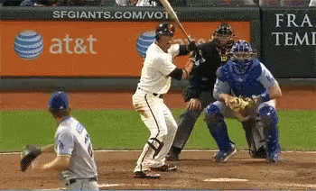

In baseball, a breaking ball is a pitch that does not travel straight as it approaches the batter; it will have sideways or downward motion on it, sometimes both (see slider). A breaking ball is not a specific pitch by that name, but is any pitch that "breaks", such as a curveball, slider, or slurve. A pitcher who primarily uses breaking ball pitches is often referred to as a junkballer.
A breaking ball is more difficult than a straight pitch for a catcher to receive as breaking pitches sometimes hit the ground (whether intentionally, or not) before making it to the plate. A curveball moves down and to the left for a right handed pitcher. For a left hand pitcher, it moves down and to the right.[1] And blocking a breaking ball requires thought and preparation by the catcher. The pitcher then, must have confidence in the catcher, and the catcher in himself, to block any ball in the dirt; if there are runners on base, they will likely advance if the ball gets away from the catcher. (Whether the pitcher is right- or left-handed will dictate which direction the catcher must turn his body to adjust for the spin of an upcoming breaking ball. This necessary movement may reveal the next intended pitch to the batter; therefore an experienced catcher must fake or mask his intentions when preparing for the pitch.)
